7. 示例应用-04：rdvmedecins-pf-spring
7.1. 移植
现在我们将把前一个应用程序移植到 Spring/Tomcat 环境中：
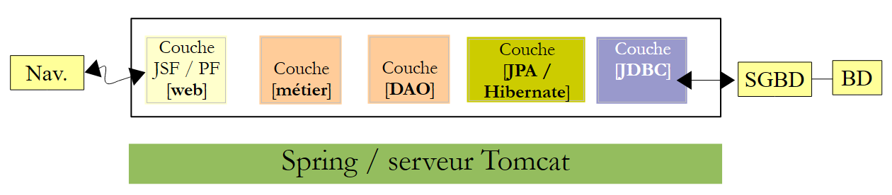 |
我们将基于两个现有的应用程序进行开发。我们将使用：
- JSF/Spring 0.2 版本中的 [DAO] 和 [JPA] 层，
- 来自 PF / EJB 03 版的 [web] / Primefaces 层，
- 来自版本 02 的 Spring 配置文件
此处的操作与将 JSF2 / EJB / Glassfish 应用程序移植到 JSF2 / Spring Tomcat 环境的操作类似。因此，我们将减少相关说明。如有需要，读者可参考该移植案例。
我们将移植所需的所有项目放置在一个新文件夹 [rdvmedecins-pf-spring] [1] 中：
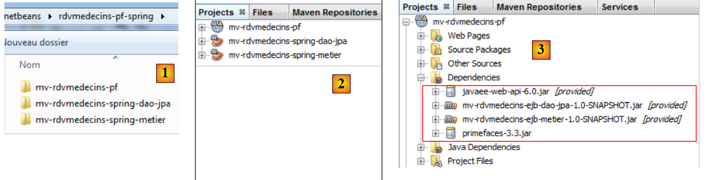 |
- [mv-rdvmedecins-spring-dao-jpa]：JSF/Spring 02 版本的 [DAO] 和 [JPA] 层，
- [mv-rdvmedecins-spring-metier]：JSF/Spring 02 版本的 [业务] 层，
- [mv-rdvmedecins-pf]：Primefaces/EJB 03 版的 [Web] 层，
- 在 [2] 中，我们将它们导入 NetBeans，
- 在 [3] 中，Web 项目的依赖关系不再正确：
- [DAO]、[JPA] 和 [business] 层的依赖关系必须修改为指向 Spring 项目；
- GlassFish 服务器曾提供 JSF 库。但在 Tomcat 服务器中已不再如此。因此必须将这些库添加到依赖项中。
[Web] 项目的演变过程如下：
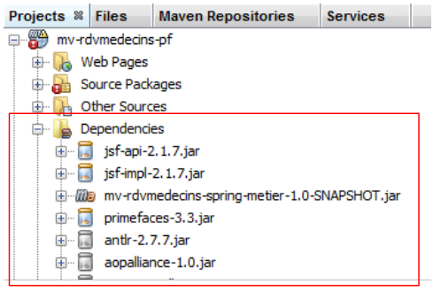 |
[web] 层的 [pom.xml] 文件现在包含以下依赖项：
<dependencies>
<dependency>
<groupId>${project.groupId}</groupId>
<artifactId>mv-rdvmedecins-spring-metier</artifactId>
<version>${project.version}</version>
</dependency>
<dependency>
<groupId>com.sun.faces</groupId>
<artifactId>jsf-api</artifactId>
<version>2.1.7</version>
</dependency>
<dependency>
<groupId>com.sun.faces</groupId>
<artifactId>jsf-impl</artifactId>
<version>2.1.7</version>
</dependency>
<dependency>
<groupId>org.primefaces</groupId>
<artifactId>primefaces</artifactId>
<version>3.3</version>
</dependency>
</dependencies>
出现了错误。这些错误是由 [web] 层中的 EJB 引用引起的。让我们先检查一下 [Application] Bean：
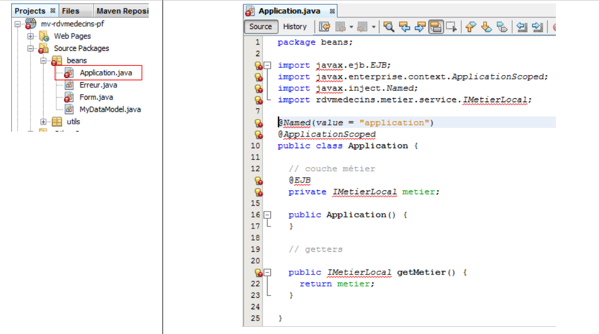 |
我们移除所有因缺少包而导致错误的行，将 [IMetier]（其在 Spring [business] 层中的名称）重命名为 [IMetierLocal] 接口，并使用 Spring 对其进行实例化：
package beans;
import java.util.ArrayList;
import java.util.List;
import org.springframework.context.ApplicationContext;
import org.springframework.context.support.ClassPathXmlApplicationContext;
import rdvmedecins.metier.service.IMetier;
public class Application {
// business layer
private IMetier metier;
// errors
private List<Erreur> erreurs = new ArrayList<Erreur>();
private Boolean erreur = false;
public Application() {
try {
// instantiation layer [business]
ApplicationContext ctx = new ClassPathXmlApplicationContext("spring-config-metier-dao.xml");
metier = (IMetier) ctx.getBean("metier");
} catch (Throwable th) {
// we note the error
erreur = true;
erreurs.add(new Erreur(th.getClass().getName(), th.getMessage()));
while (th.getCause() != null) {
th = th.getCause();
erreurs.add(new Erreur(th.getClass().getName(), th.getMessage()));
}
return;
}
}
// getters
public Boolean getErreur() {
return erreur;
}
public List<Erreur> getErreurs() {
return erreurs;
}
public IMetier getMetier() {
return metier;
}
}
- 第 20-21 行：从 Spring 配置文件中实例化 [business] 层。这是 [business] 层所使用的文件 [1]。我们将它复制到 Web 项目中 [2]：
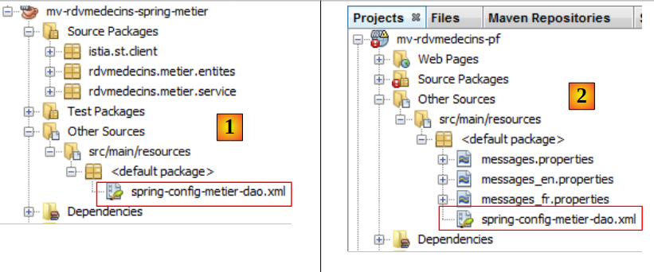 |
- 第 22-31 行：我们处理任何异常并保存其堆栈跟踪。
完成上述操作后，[Application] Bean 便不再存在任何错误。现在让我们来看 [Form] Bean [1]、[2]：
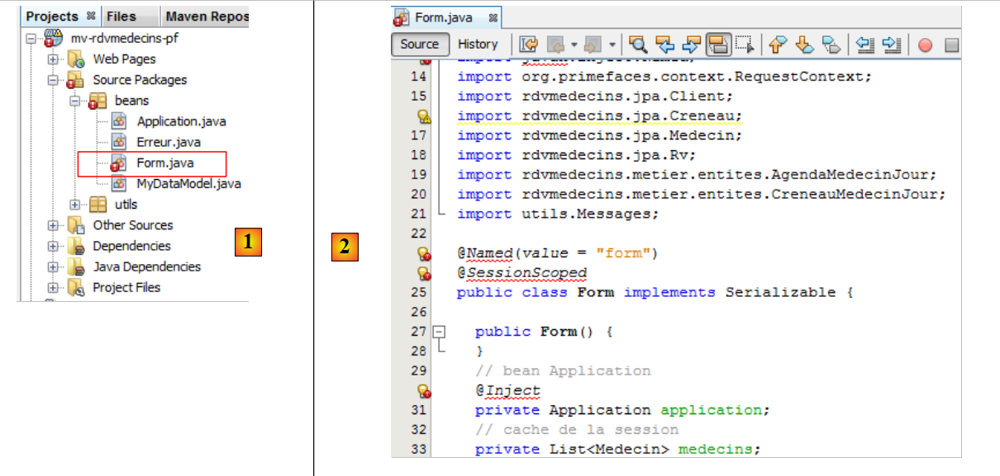 |
我们删除了所有因缺少包而导致的错误行（导入语句和注解）。这样就足以消除所有错误 [3]。
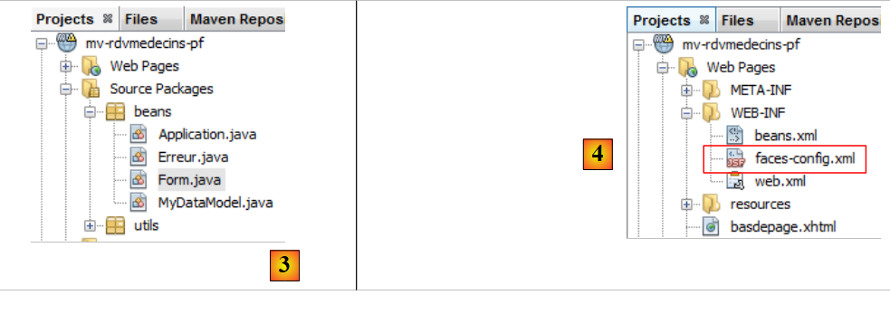 |
此外，我们还需要为该字段添加 getter 和 setter 方法
// bean Application
private Application application;
从 [Application] 和 [Form] Bean 中移除的部分注解曾将这些类声明为具有特定作用域的 Bean。现在，此配置在以下 [faces-config.xml] 文件中进行设置 [4]：
<?xml version='1.0' encoding='UTF-8'?>
<!-- =========== FULL CONFIGURATION FILE ================================== -->
<faces-config version="2.0"
xmlns="http://java.sun.com/xml/ns/javaee"
xmlns:xsi="http://www.w3.org/2001/XMLSchema-instance"
xsi:schemaLocation="http://java.sun.com/xml/ns/javaee http://java.sun.com/xml/ns/javaee/web-facesconfig_2_0.xsd">
<application>
<!-- message file -->
<resource-bundle>
<base-name>
messages
</base-name>
<var>msg</var>
</resource-bundle>
<message-bundle>messages</message-bundle>
</application>
<!-- the applicationBean bean -->
<managed-bean>
<managed-bean-name>applicationBean</managed-bean-name>
<managed-bean-class>beans.Application</managed-bean-class>
<managed-bean-scope>application</managed-bean-scope>
</managed-bean>
<!-- the bean form -->
<managed-bean>
<managed-bean-name>form</managed-bean-name>
<managed-bean-class>beans.Form</managed-bean-class>
<managed-bean-scope>session</managed-bean-scope>
<managed-property>
<property-name>application</property-name>
<value>#{applicationBean}</value>
</managed-property>
</managed-bean>
</faces-config>
通常情况下，移植工作已经完成。不过，还有一些细节需要完善。我们可以尝试运行该 Web 应用程序。
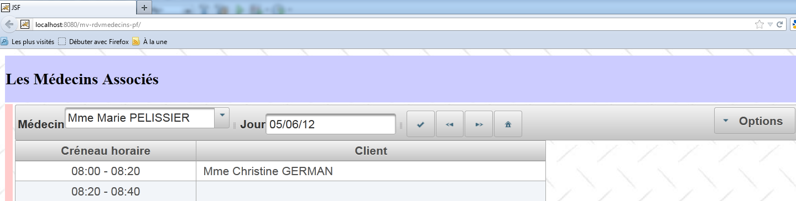 |
我们将留给读者自行测试这个新应用程序。我们可以对其进行微调，以处理 [Application] Bean 初始化失败的情况。我们知道，在这种情况下，以下字段已经初始化：
// erreurs
private List<Erreur> erreurs = new ArrayList<Erreur>();
private Boolean erreur = false;
此场景可在 [Form] Bean 的 init 方法中处理：
@PostConstruct
private void init() {
// was the initialization successful?
if (application.getErreur()) {
// retrieve the list of errors
erreurs = application.getErreurs();
// the error view is displayed
setForms(false, false, true);
}
// caching doctors and customers
...
}
- 第 5 行：如果 [Application] Bean 初始化失败，
- 第 7 行：获取错误列表，
- 第 9 行：并显示错误页面。
因此，如果我们停止 MySQL 数据库管理系统并重启应用程序，现在会看到以下页面：
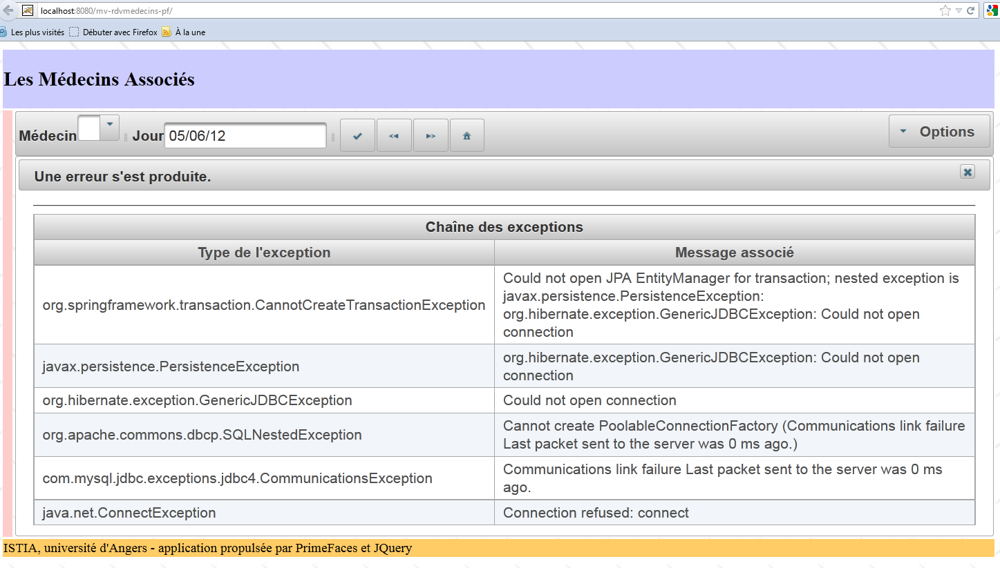
7.2. 结论
将 PrimeFaces/EJB/GlassFish 应用程序移植到 PrimeFaces/Spring/Tomcat 环境中证明是相当简单的。在 JSF/Spring/Tomcat 应用程序研究中报告的内存泄漏问题（第 4.3.5 节）仍然存在。
该问题将采用相同的方法予以解决。
7.3. 使用 Eclipse 进行的测试
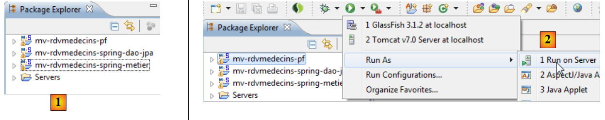 |
我们将 Maven 项目导入 Eclipse [1]：
我们运行 Web 项目 [2]。
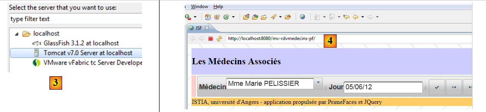 |
我们选择 Tomcat 服务器 [3]。随后，应用程序的首页将在 Eclipse 的内置浏览器中显示 [4]。